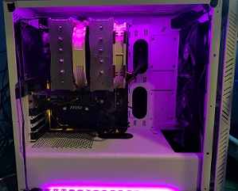
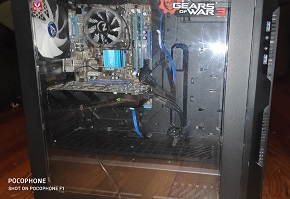

This mini-ITX PC build is a rare one. Asrock makes the DeskMini series of starter PCs, where it comes with a case, motherboard, and PSU preinstalled, only you provide the RAM, CPU, and the rest of the components
Either way, this is a great deal since MiniITX boards are unreasonably expensive for being such a niche and imperfect way to build a computer. Nonetheless, I guarantee this is the cheapest, easiest way to do it!
Powered by a Ryzen 5 3200G, a 6 core, 12 thread CPU with integrated Vega 8 graphics, a dedicated GPU is not needed. Game's like Battlefield 1 run a console-like 30fps on High settings, making it a potent little
Game
Resolution
Graphics
FPS (Highest locked)
Battlefield 1
1080P
High
30
Destiny 2
1080P
High
60
Halo Master Chief Collection
1080P
Max
144
Worms Ultimate Mayhem
1080P
Max
144
My Personal Gaming PC

A PC capable of performing VR gaming flawlessly with whatever you throw at it. The RX6600XT was relatively ignored considering the best price-to-performance ratio GPU on the market right now is the RTX3060ti. However, it's impossible to find these cards at MSRP due to the
global chip shortage, and instead of fighting an unwinnable battle, I upgraded to the RX6600XT, the most powerful 1080p GPU available. I'm an 1080p gamer, the resolution is perfect in my opinion, however for 4K
gamers, look elsewhere. This is a card I managed to get at MSRP, given that I get it in a Newegg bundle. Using the bundled motherboard to build another PC that I sold, I was effectively able to upgrade my GPU by 200% in terms
of raw performance and now have over twice the amount of VRAM, compared to the pitiful longevity of my previous GTX1060 3GB card.
Game
Resolution
Graphics
FPS (Highest locked)
Halo Infinite
1080P
High
75
Battlefield 2042
1080P
High
60
Half-Life Alyx
2160P (Index)
Max
80
Pavlov VR
2160P (Index)
Low (Ultra AA)
144
The $250 Uber Budget PC

A PC perfect for casual gaming, just don't play anything anything from the current console generation and stick to last-gen titles. The GTS450, 4GB DDR3, Core 2 Quad Q6600 processor, this ain't no slouch on last gen games! This PC only cost $250 even during the shortage, since
it's incapable of playing current gen titles, there is zero demand for these parts. Meaning these parts are ripe for the taking if you just want a PC you can play esports titles and hundreds of PC classics.